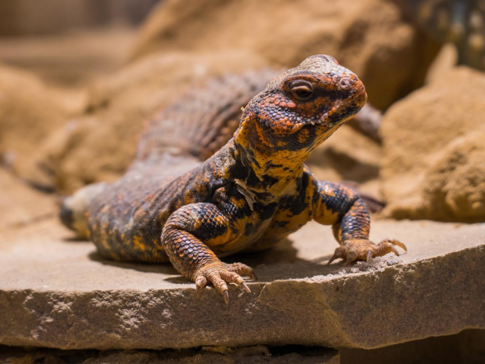

American Alligator
Alligator mississippiensis
LC — Least Concern

Ball Python
Python regius
LC — Least Concern

Black Mamba
Dendroaspis polylepis
LC — Least Concern

Burmese Python
Python bivittatus
NT — Near Threatened

Carolina Anole
Anolis carolinensis
LC — Least Concern

Desert Horned Lizard
Phrynosoma platyrhinos
LC — Least Concern

Eastern Box Turtle
Terrapene carolina carolina
NT — Near Threatened

Frilled Lizard
Chlamydosaurus kingii
LC — Least Concern

Gila Monster
Heloderma suspectum
NT — Near Threatened

Jackson's Chameleon
Trioceros jacksonii
LC — Least Concern

King Cobra
Ophiophagus hannah
EN — Endangered

Komodo Dragon
Varanus komodoensis
EN — Endangered

Nile Monitor
Varanus niloticus
LC — Least Concern

Ornate Box Turtle
Terrapene ornata
NT — Near Threatened

Pancake Tortoise
Malacochersus tornieri
VU — Vulnerable

Red-eared Slider
Trachemys scripta elegans
LC — Least Concern

Tiger Snake
Notechis scutatus
LC — Least Concern

Uromastyx
Uromastyx spp.
LC — Least Concern

Veiled Chameleon
Chamaeleo calyptratus
LC — Least Concern

Water Monitor
Varanus salvator
LC — Least Concern

Western Fence Lizard
Sceloporus occidentalis
LC — Least Concern

Yellow-bellied Sea Snake
Hydrophis platurus
LC — Least Concern

Zebra-tailed Lizard
Callisaurus draconoides
LC — Least Concern